Trabalho 1
Triangulação de uma superfície implícita pelo algoritmo Marching Tetrahedra
Aluno: Hugo Leonardo França
Professores: Afonso Paiva e Luis Gustavo Nonato
1. Construção da Corner Table
No primeiro item deste trabalho, foi implementada uma função Matlab que cria uma corner table a partir de uma malha fornecida no formato shared vertex. Essa função está definida no arquivo constroi_cornertable.m.
A função recebe como parâmetros:
- V: vértices da malha,
- F: faces da malha.
Ela retorna os parâmetros:
- V_corners: lista com os corners de cada um dos vértices da malha,
- C: corner table (cada item desta lista corresponde a um corner).
{kind=link}
2. Marching Tetrahedra com suavização de vértices
Dada uma função \(F: \mathbb{R}^3 \rightarrow \mathbb{R}\), o conjunto de pontos \(\textbf{x} \in \mathbb{R}^3\) tais que \(F(\textbf{x}) = 0\) é uma superfície implícita. Neste trabalho foi implementado um método em Matlab para, a partir da função \(F\), criar uma triangulação desta superfície pelo algoritmo Marching Tetrahedra. Este método está definido no arquivo marching_tetrahedra.m
A suavizãção de vértices foi feita através do algoritmo apresentado em aula (Botsch e Kobbelt, 2004), e é realizada pelo método Matlab definido no arquivo suavizacao_vertices.m. Este algoritmo de suavização utiliza os vetores normais à superfície nos vértices. O cálculo destes vetores é comentado no próximo item deste relatório.
Abaixo são mostrados os resultados obtidos pelo algoritmo para algumas funções \(F\) escolhidas como exemplos. Cada imagem apresenta a malha de triângulos construída pelo algoritmo Marching Tetrahedra, bem como um histograma normalizado das razões de aspecto das faces na malha. Em cada exemplo é apresentado uma imagem antes do algoritmo de suavização e outra imagem após o algoritmo.
Clique em qualquer uma das imagens para ampliá-la.
2.1 Torus
$$ F(x, y, z) = (x^2 + y^2 + z^2 + R^2 - a^2)^2 - 4R^2(x^2 + y^2), $$ com \(R=40\) e \(a=15\).
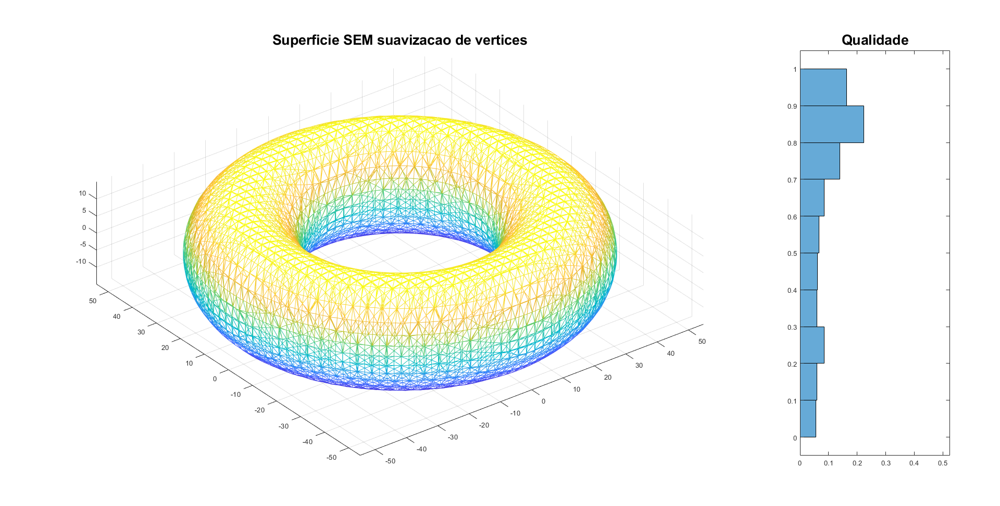 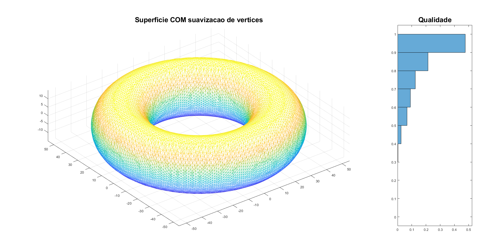{kind=link}
{kind=link}

2.2 Cálice
$$ F(x, y, z) = x^2 + y^2 - log(z + 3.2)^2 - 0.02 $$


2.3 Triplo-Torus
$$ F(x, y, z) = F_1(x, y, z)\cdot F_2(x, y, z)\cdot F_3(x, y, z) - r, $$ em que $$ F_1(x, y, z) = (x^2 + y^2 + z^2 + R^2 - a^2)^2 - 4R^2(x^2 + y^2), $$ $$ F_2(x, y, z) = (x^2 + y^2 + z^2 + R^2 - a^2)^2 - 4R^2(x^2 + z^2), $$ $$ F_3(x, y, z) = (x^2 + y^2 + z^2 + R^2 - a^2)^2 - 4R^2(y^2 + z^2), $$ com \(R = 1\), \(a=0.2\) e \(r=0.01\).


2.4 Torus-Cruzados
Esta função possui, além de contas algébricas, alguns operadores condicionais. Desta forma, ela será apresentada diretamente como um código Matlab. Acesse o código desta função clicando aqui.
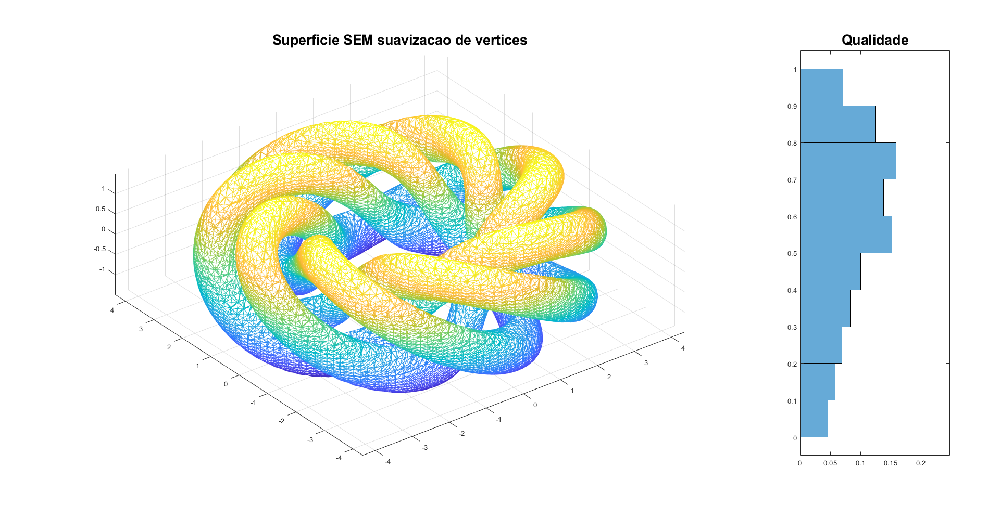{kind=link}
 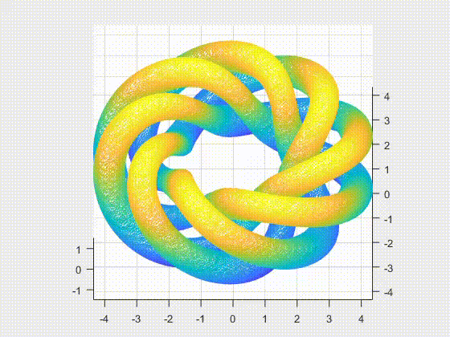
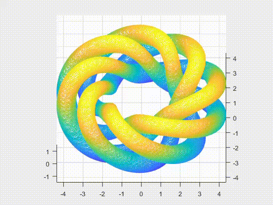
{kind=link}
2.5 Gota em Queda
Dado um parâmetro \(t \), esta superfície é definida pela função$$ F(x, y, z) = F_1(x, y, z)\cdot F_2(x, y, z)-1000, $$ em que $$ F_1(x,y , z) = z-\frac{6(1-\cos(\sqrt{x^2+y^2}-2t\pi))}{\sqrt{x^2+y^2+4}}, $$ $$ F_2(x, y, z) = 2(x^2+y^2)+(z-40\sin((t+0.19)\pi)+1)^2-10. $$
Ao variar o valor do parâmetro \(t\), o formato desta superfície é alterado de forma parecida com a queda de uma gota. Nas imagens abaixo a qualidade da superfície é apresentada para \(t=0\) e, em seguida, é feita uma animação variando o valor de \(t\). 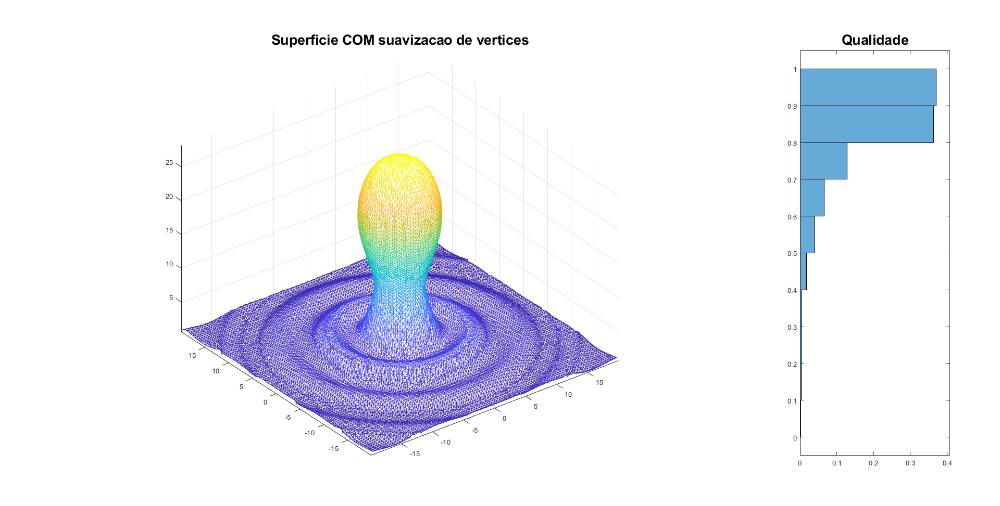
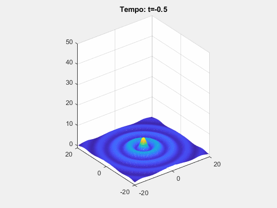
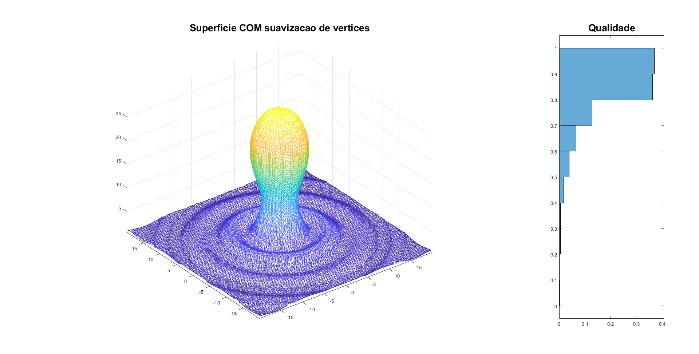
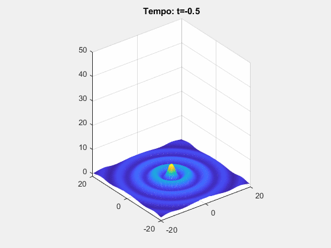
{kind=link}
{kind=link}
3. Cálculo de vetores normais
Dada uma superfície definida já de forma explícita por seus vértices e faces, neste trabalho também foi implementado um método para calcular o vetor normal a esta superfície em algum ponto. Este método está definido no arquivo Matlab calcula_normais_vertices.m.
O algoritmo Marching Tetrahedra e o cálculo das normais foram feitos de modo que os vetores sempre apontam no sentido do valor positivo da função \(F(x, y, z)\).
Nas imagens abaixo são novamente plotadas as superfícies dos exemplos anteriores, calculadas pelo algoritmo Marching Tetrahedra, juntamente com os vetores normais.
 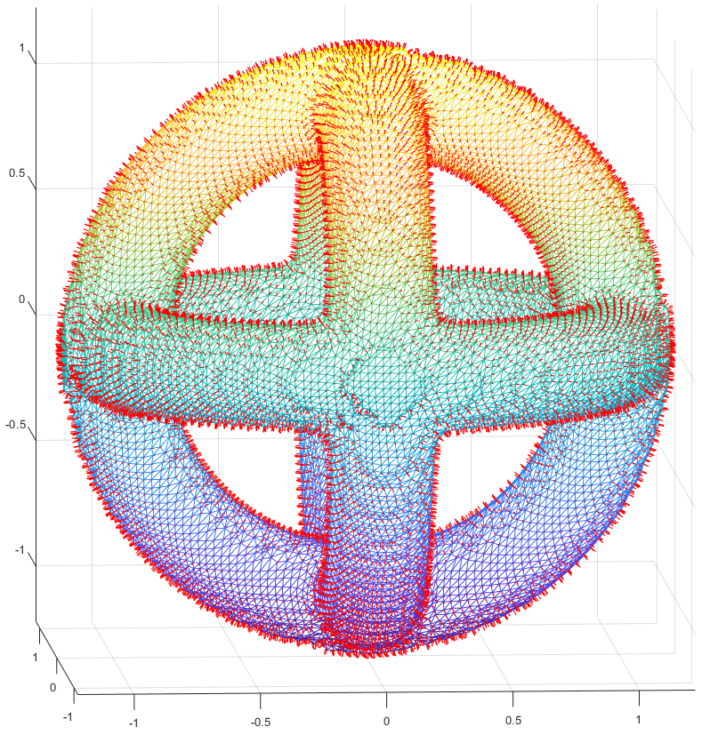
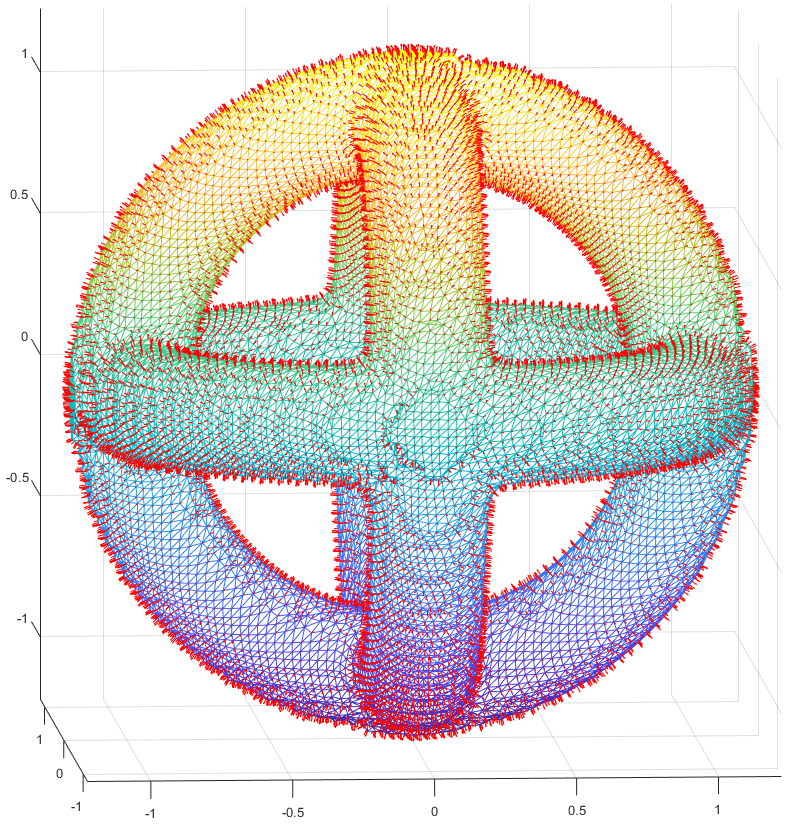
{kind=link}
 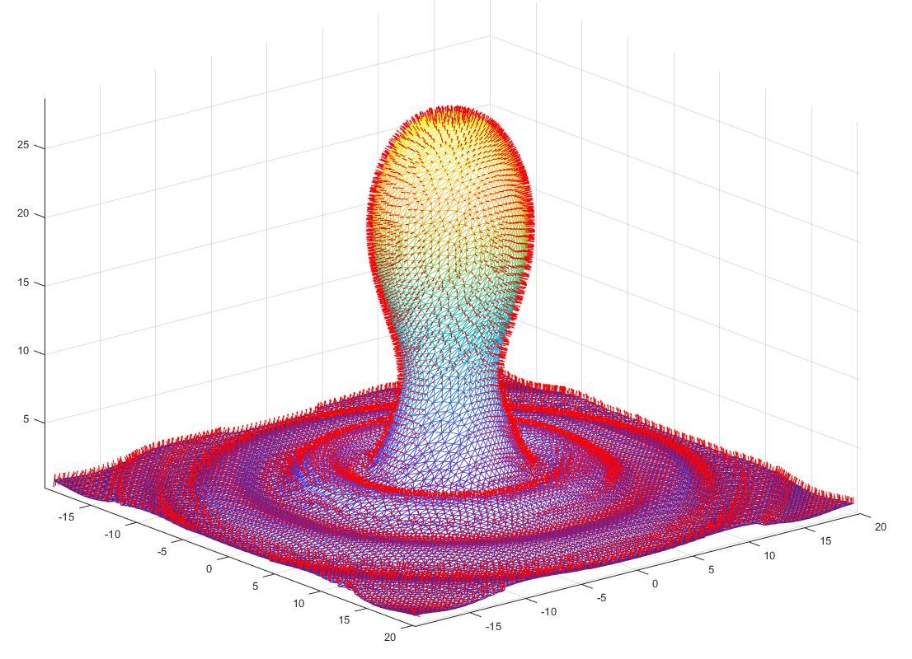
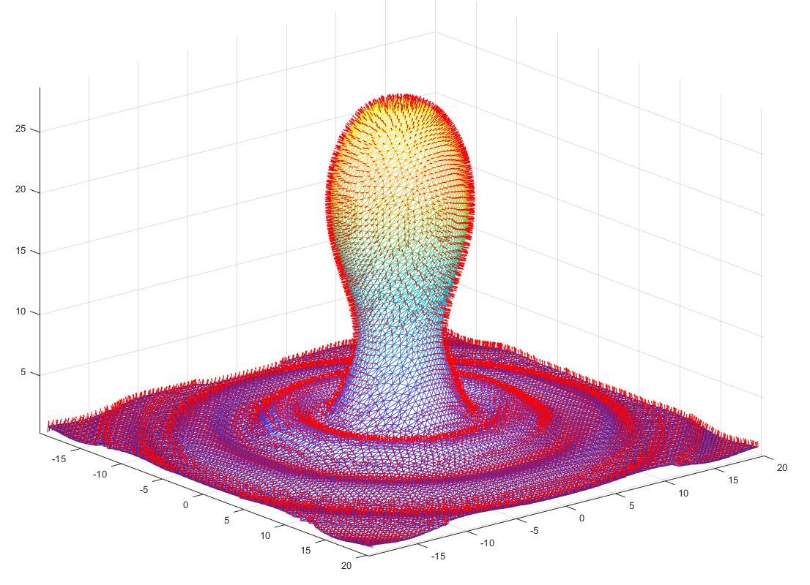
{kind=link}

{kind=link}
4. Conclusões
Os resultados mostraram que realmente o algoritmo Marching Tetrahedra é capaz de representar visualmente muito bem uma superfície implícita.
O algoritmo de suavização de vértices também mostrou resultados muito positivos, pois foi possível verificar, através dos histogramas apresentados, que a qualidade a malha foi melhorada.
5. Código-Fonte
O código-fonte pode ser acessado clicando aqui.
Para rodar os exemplos apresentados aqui com a triangulação pelo Marching Tetrahedra, basta executar o arquivo main.m no matlab. Logo nas primeiras linhas do arquivo é possível escolher qual dos exemplos deseja rodar.
Para rodar os exemplos cuja superfície vem diretamente de um arquivo obj, basta executar o arquivo main_normais_obj.m no matlab.